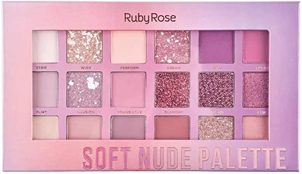
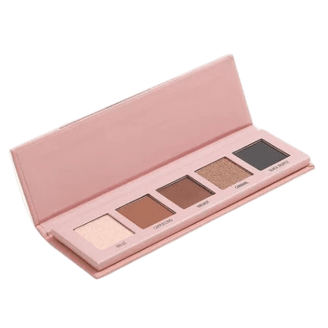

Aplicar as sombras Para aplicar as sombras deve-se começar com uma sombra clara, cobrindo toda a pálpebra. Em seguida, deve-se aplicar uma cor ligeiramente mais escura para definir o côncavo, fazendo movimentos suaves para a direita e para a esquerda, contornando a região abaixo do osso. Pode-se escolher um tom mais escuro para o canto exterior do olho e uma cor mais clara para o canto interno, de forma a abrir e iluminar o olhar. Para terminar, pode-se ainda passar uma cor bem clara e luminosa ou mesmo um iluminador logo abaixo da linha da sobrancelha, para iluminar e levantar o olhar.
 Para terminar de maquiar os olhos, pode-se escolher usar um delineador, de preferência de cor marrom ou preta,
que deve ser usado na pálpebra junto da linha dos cílios. O delineador pode ser em gel, caneta ou lápis, e em caso de gel este deve ser aplicado usando um pincel chanfrado.

Caso haja alguma dificuldade em fazer um risco fino e limpo com delineador, pode-se usar sombra preta ou marrom escura para fazer o risco, usando um pincel chanfrado.
Para isso, basta molhar ligeiramente a ponta do pincel na água, em seguida na sombra que se deseja utilizar e, por fim, aplicar no olho tal como se faria com um delineador em gel.
Desse modo, a sombra vai ficar bem mais compacta e o risco fica com um efeito ligeiramente esfumado.
No final, deve passar um pouco de rímel nos cílios, fazendo movimentos desde a base até às pontas.